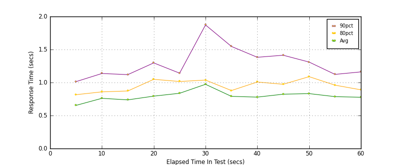
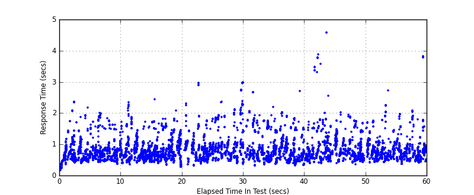
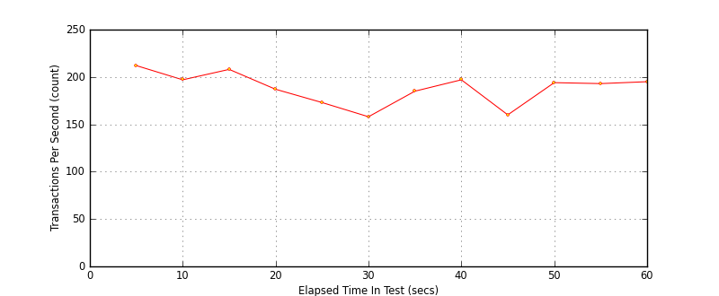

Performance Results Report
Summary
transactions: 11470
errors: 0
run time: 60 secs
rampup: 0 secs
test start: 2017-05-25 09:26:10
test finish: 2017-05-25 09:27:09
time-series interval: 5 secs
workload configuration:
| group name | threads | script name |
|---|
| user_group-10 | 10 | redis_stress.py |
| user_group-11 | 10 | redis_stress.py |
| user_group-12 | 10 | redis_stress.py |
| user_group-13 | 10 | redis_stress.py |
| user_group-14 | 10 | redis_stress.py |
| user_group-15 | 10 | redis_stress.py |
| user_group-2 | 10 | redis_stress.py |
| user_group-3 | 10 | redis_stress.py |
| user_group-1 | 10 | redis_stress.py |
| user_group-6 | 10 | redis_stress.py |
| user_group-7 | 10 | redis_stress.py |
| user_group-4 | 10 | redis_stress.py |
| user_group-5 | 10 | redis_stress.py |
| user_group-8 | 10 | redis_stress.py |
| user_group-9 | 10 | redis_stress.py |
All Transactions
Transaction Response Summary (secs)
| count | min | avg | 80pct | 90pct | 95pct | max | stdev |
|---|
| 11470 | 0.155 | 0.790 | 0.959 | 1.241 | 1.591 | 4.571 | 0.374 |
Interval Details (secs)
| interval | count | rate | min | avg | 80pct | 90pct | 95pct | max | stdev |
|---|
| 1 | 1062 | 212.40 | 0.155 | 0.653 | 0.815 | 1.013 | 1.211 | 2.352 | 0.305 |
| 2 | 986 | 197.20 | 0.373 | 0.760 | 0.858 | 1.137 | 1.555 | 1.989 | 0.319 |
| 3 | 1042 | 208.40 | 0.351 | 0.737 | 0.872 | 1.119 | 1.557 | 2.341 | 0.316 |
| 4 | 939 | 187.80 | 0.266 | 0.794 | 1.048 | 1.297 | 1.497 | 2.438 | 0.332 |
| 5 | 866 | 173.20 | 0.314 | 0.837 | 1.015 | 1.142 | 1.582 | 2.956 | 0.346 |
| 6 | 792 | 158.40 | 0.370 | 0.973 | 1.037 | 1.872 | 2.072 | 2.987 | 0.506 |
| 7 | 929 | 185.80 | 0.321 | 0.790 | 0.878 | 1.547 | 1.735 | 2.662 | 0.398 |
| 8 | 986 | 197.20 | 0.319 | 0.779 | 1.008 | 1.382 | 1.501 | 2.690 | 0.352 |
| 9 | 802 | 160.40 | 0.393 | 0.823 | 0.973 | 1.413 | 1.666 | 4.571 | 0.506 |
| 10 | 971 | 194.20 | 0.348 | 0.832 | 1.089 | 1.310 | 1.530 | 2.018 | 0.322 |
| 11 | 966 | 193.20 | 0.415 | 0.786 | 0.960 | 1.123 | 1.408 | 2.725 | 0.310 |
| 12 | 979 | 195.80 | 0.360 | 0.776 | 0.889 | 1.161 | 1.770 | 3.822 | 0.385 |
Graphs
Response Time: 5 sec time-series

Response Time: raw data (all points)

Throughput: 5 sec time-series
